Warm up with the matching game — opens in a new tab
📚 Sitcom English · Episode Guide
A B1–B2 journey through the vocabulary, idioms, and hidden meanings of the Friends episode “The One With All the Jealousy” — based on a visual lesson deck built for learners of English.
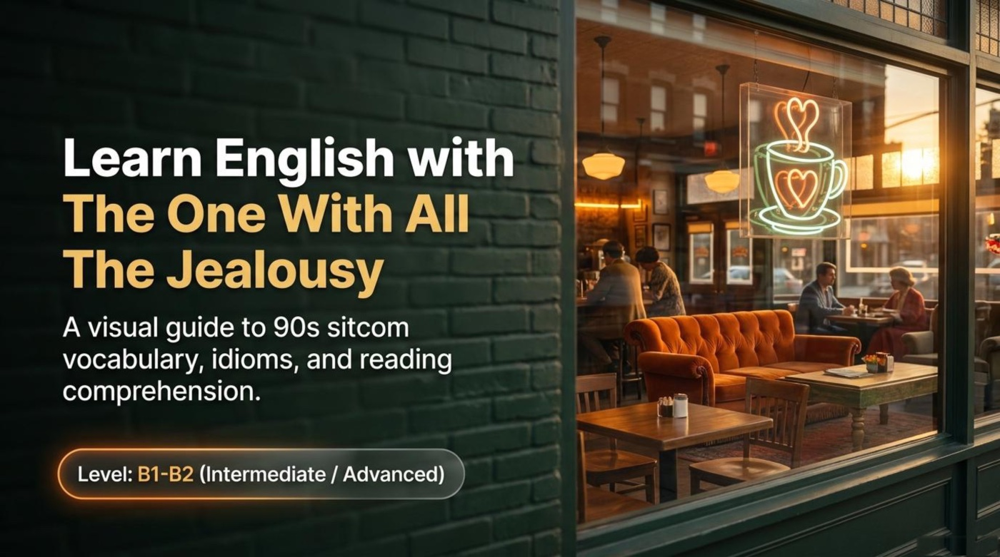
Early in the second season of Friends, a lovestruck paleontologist sends a barbershop quartet to his girlfriend’s office to sing about their relationship in front of her new colleagues. The gesture is meant to be romantic, and it lands as one of the most gloriously embarrassing moments in the history of the show. That single scene — sweet, insecure, and painfully public — is the engine behind a rich English lesson, because it packs idioms, phrasal verbs, slang, and cultural history into ninety seconds of screen time.
The lesson deck Learn English with The One With All the Jealousy turns this episode into a structured study unit. Its cover promises “a visual guide to 90s sitcom vocabulary, idioms, and reading comprehension” at level “B1-B2 (Intermediate / Advanced)”, and the material keeps that promise with polaroid flashcards, a receipt-shaped vocabulary page, an idiom spotlight, culture notes, and self-check quizzes. Interestingly, the deck itself carries a small “Gemini Notebook” watermark, which means the slides were assembled with the help of an AI notebook tool — every quoted passage in this article comes directly from that AI-built material, followed by commentary and practical advice. Pay attention to how much usable English hides inside one ordinary sitcom episode.
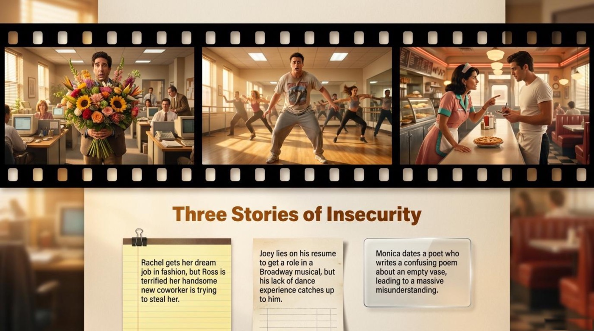
The heart of the episode is announced by the deck with a simple heading: “Three Stories of Insecurity.” Each of the three friends faces a moment when self-doubt takes the wheel, and each storyline teaches its own register of English — office small talk, showbiz vocabulary, and the language of art and insults. The deck summarizes the three plots in one breath:
“Rachel gets her dream job in fashion, but Ross is terrified her handsome new coworker is trying to steal her.” · “Joey lies on his resume to get a role in a Broadway musical, but his lack of dance experience catches up to him.” · “Monica dates a poet who writes a confusing poem about an empty vase, leading to a massive misunderstanding.”
— from the lesson deck
It is worth noticing that the word insecurity describes all three plots at once. Ross is afraid of losing Rachel, Joey is afraid of being exposed as a beginner, and Monica is afraid of being seen as unintelligent. The episode works as an English lesson precisely because every character acts under emotional pressure — and people under pressure speak in idioms, exaggerations, and jokes.
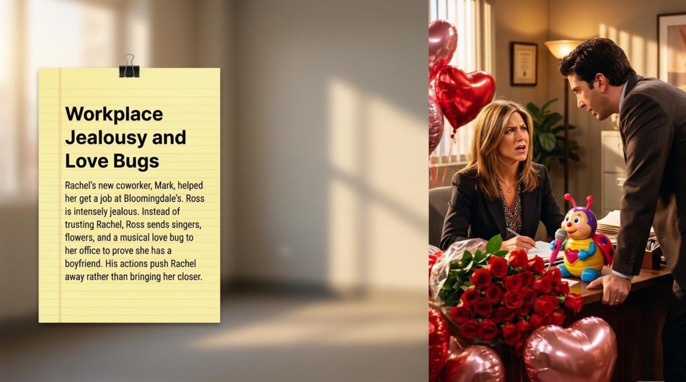
The first storyline is titled “Workplace Jealousy and Love Bugs,” and the deck explains the setup plainly:
“Rachel's new coworker, Mark, helped her get a job at Bloomingdale's. Ross is intensely jealous. Instead of trusting Rachel, Ross sends singers, flowers, and a musical love bug to her office to prove she has a boyfriend. His actions push Rachel away rather than bringing her closer.”
— from the lesson deck
Notice the last sentence, because it carries the whole moral: jealousy produces the exact opposite of what it wants. Ross wants to protect his relationship, so he fills Rachel’s office with roses, heart balloons, and a singing toy — and manages to humiliate her in front of the people she most wants to impress. The deck’s vocabulary cards turn this scene into three memorable lessons. On a card styled as a polaroid of a dog and a fire hydrant, it teaches the idiom of possessive behavior, with the context line “Rachel accuses Ross of acting like a dog peeing on her desk.” A second polaroid teaches the phrasal verb behind Ross’s suspicion, with the context “Ross thinks Mark is hitting on Rachel.” A third card names the real source of Ross’s fear — trust — with the note that “Chandler warns Ross that Mark is becoming Rachel's confidant.” All three expressions reappear later in this article, so keep them in mind.
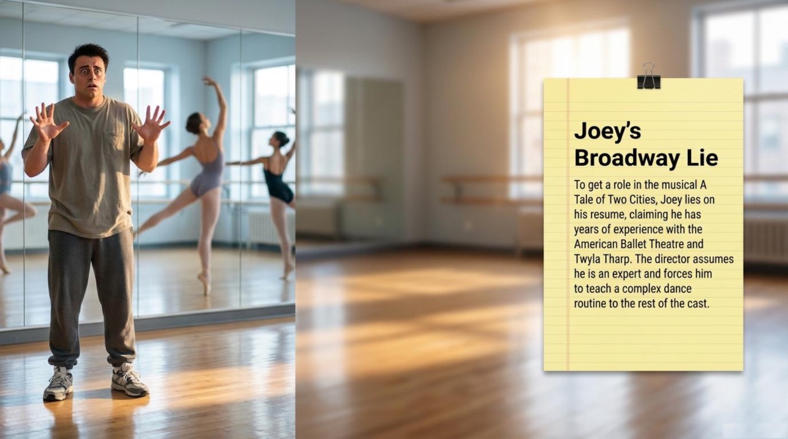
The second storyline moves from romance to show business. The deck introduces it with a note pinned to a legal pad, standing next to a picture of Joey frozen in panic inside a dance studio:
“To get a role in the musical A Tale of Two Cities, Joey lies on his resume, claiming he has years of experience with the American Ballet Theatre and Twyla Tharp. The director assumes he is an expert and forces him to teach a complex dance routine to the rest of the cast.”
— from the lesson deck
The beauty of this plot, for a language learner, is that it is a complete warning about professional English. A resume is a genre with its own inflated language, and Joey’s lie collapses the moment real expertise is demanded of him. The deck even supplies a phrasal pearl in its plot summary: his lack of experience “catches up to him.” The expression catch up to someone paints consequences as a pursuer — a debt, a mistake, or a lie that eventually tracks you down. Importantly, the storyline name-drops two real cultural references: A Tale of Two Cities, Dickens’s novel about revolutionary Paris and London, and Twyla Tharp, one of America’s most famous choreographers. Knowing who these names belong to is part of understanding the joke.
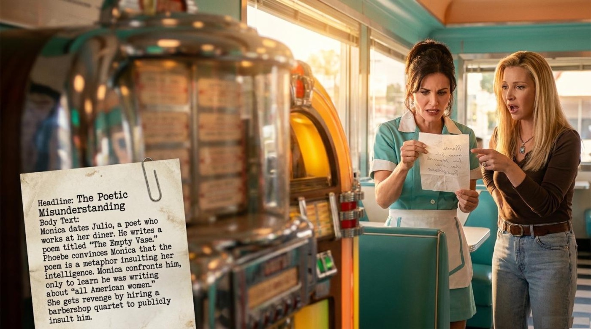
The third storyline is the most literary. The deck presents it as a newspaper clipping pinned inside a diner, under the headline “The Poetic Misunderstanding”:
“Monica dates Julio, a poet who works at her diner. He writes a poem titled “The Empty Vase.” Phoebe convinces Monica that the poem is a metaphor insulting her intelligence. Monica confronts him, only to learn he was writing about “all American women.” She gets revenge by hiring a barbershop quartet to publicly insult him.”
— from the lesson deck
This is the storyline where vocabulary does the most damage. A single image — an empty vase — is interpreted, misinterpreted, defended, and avenged. Monica’s friend Phoebe supplies the toxic reading; Monica supplies the confrontation; Julio supplies the unfortunate clarification; and the barbershop quartet supplies the revenge. Notice that the misunderstanding is not about grammar at all. It is about figurative language — the hardest and most rewarding layer of a foreign tongue. The lesson for readers is concrete: before reacting to a metaphor, it pays to check the intended target, because the difference between you and everyone like you can end a relationship.
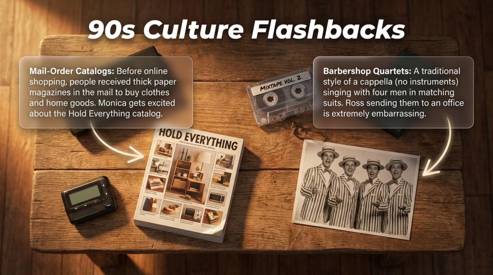
The deck also pauses the story for a page titled “90s Culture Flashbacks,” and it explains two objects that modern viewers may never have touched:
“Mail-Order Catalogs: Before online shopping, people received thick paper magazines in the mail to buy clothes and home goods. Monica gets excited about the Hold Everything catalog.”
— from the lesson deck
“Barbershop Quartets: A traditional style of a cappella (no instruments) singing with four men in matching suits. Ross sending them to an office is extremely embarrassing.”
— from the lesson deck
These two notes explain why the jokes land. A mail-order catalog called Hold Everything was the ancestor of the online shopping cart, and Monica’s excitement about furniture in her mailbox is a very 1996 pleasure. A barbershop quartet is charming at a county fair and devastating at your desk, which is exactly why Ross’s gift backfires. Cultural literacy is half of comedy comprehension, and the deck treats it as a serious part of language learning.
The deck teaches its vocabulary in themed sets, and the set titles alone are worth stealing: a lined notepad page is called “Vocabulary of a Bad Audition,” a diner receipt is called “Vocabulary of a Bad Date” — stamped, in the best 90s tradition, “TOTAL DUE: $0.00” — and a corkboard holds three polaroid cards for the jealousy storyline. Here is the full harvest, item by item, in plain text.
1️⃣ Marking your territory idiom
Literal picture: an animal leaves its scent on a spot to claim it as its own — exactly what a dog does to a fire hydrant, and what the deck’s polaroid shows.
Figurative meaning: doing something to show others that a person or thing belongs to you.
Example from the material: “Rachel accuses Ross of acting like a dog peeing on her desk.” The sentence paints Ross’s gift offensive as animal behavior — public, possessive, and unflattering.
How the deck explains it: the polaroid card defines the idiom as “Doing something to show others that a person or thing belongs to you,” and the context line supplies the accusation. In other words, the deck moves from the animal image to human jealousy in a single step.
2️⃣ Hitting on someone phrasal verb
Literal picture: the verb hit suggests a physical strike, which makes the idiom sound funnier — no actual hitting is involved.
Figurative meaning: flirting with someone to show romantic interest.
Example from the material: “Ross thinks Mark is hitting on Rachel.” The sentence explains Ross’s entire behavior: the flowers, the singers, and the love bug all exist because of this suspicion.
How the deck explains it: the second polaroid defines it as “Flirting with someone to show romantic interest,” anchored in Ross’s paranoid reading of Mark’s friendliness. The lesson is subtle: the same sentence can be friendly or flirty depending on the eye of the beholder.
3️⃣ Confidant noun
Literal meaning: the word comes from the French confident, a trusted friend — someone who keeps your confidence.
Figurative meaning: the emotional insider of someone’s life; the person secrets are shipped to.
Example from the material: “Chandler warns Ross that Mark is becoming Rachel's confidant.” The line matters because Ross’s real fear is not flirting — it is intimacy. Mark is winning Rachel’s trust, one coffee at a time.
How the deck explains it: the third polaroid defines a confidant as “A person you trust and share your secrets with.” Notice that the deck chose a warning line from Chandler, which turns a dictionary entry into a piece of social analysis.
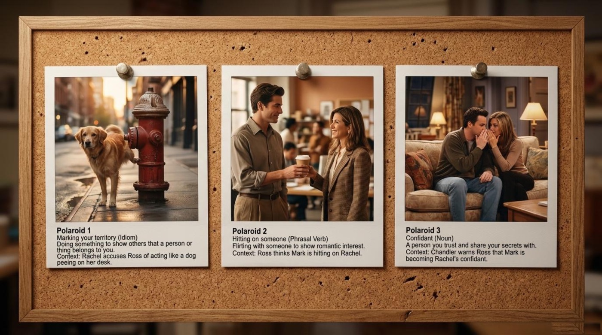
4️⃣ A piece of cake idiom
Literal picture: a slice of cake on a plate — delicious, and demanding absolutely no effort to eat.
Figurative meaning: something that is incredibly easy to do.
Example from the material: “The director tells Joey the dance will be a piece of cake.” The line is deliciously ironic in context, because the dance is precisely what destroys Joey.
How the deck explains it: the notepad page defines it as “Something that is incredibly easy to do,” and the idiom spotlight page later rebuilds the logic step by step — from eating a slice of cake with zero effort, to any task that requires zero effort. Remember that this chain from image to meaning is exactly how native speakers store idioms.
5️⃣ Jazz hands noun
Literal meaning: a performance gesture where the hands are waved with palms forward and fingers spread tight.
Figurative meaning: the universal symbol of enthusiasm substituting for talent — sparkle where skill should be.
Example from the material: “Joey's only dance move is step-ity step and jazz hands.” One invented routine, one gesture, and a lie exposed on a Broadway stage.
How the deck explains it: the notepad page calls it “A performance gesture where the hands are waved with palms forward and fingers spread tight,” then lands the punchline about Joey. The entry teaches both a real theater term and a piece of comic timing.
6️⃣ CliffsNotes noun · cultural
Literal meaning: small summary books students read instead of reading a full, long novel.
Figurative meaning: any shortcut around serious reading — the yellow-and-black striped badge of the unprepared.
Example from the material: “Joey doesn't know who Charles Dickens is, so Chandler offers him the CliffsNotes.” The moment is a perfect joke about preparedness: the actor cast in a Dickens musical cannot identify Dickens.
How the deck explains it: the notepad labels it “Noun / Cultural” and defines it as “Small summary books students read instead of reading a full, long novel.” The tag is a quiet lesson in itself — some vocabulary is cultural knowledge, not grammar.
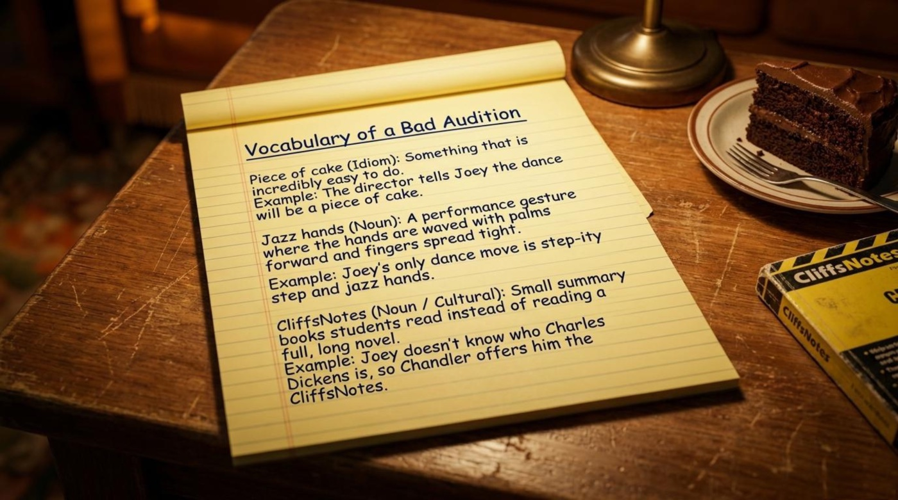
7️⃣ Dense adjective
Literal meaning: closely packed together; heavy and thick, like a fog or a forest.
Figurative meaning: unable to understand things quickly; slightly stupid.
Example from the material: “I am totally dense about poetry.” The charm of the line is its self-irony — the speaker admits incomprehension before anyone else can point it out.
How the deck explains it: the receipt page defines it as “Unable to understand things quickly; slightly stupid,” and the matching exercise later compresses it to “Dense = Slow to understand.” It is a soft insult, safe enough to use about yourself — which makes it a conversational treasure.
8️⃣ Pretentious adjective
Literal meaning: built on the word pretend — an act of being something you are not.
Figurative meaning: trying to appear smarter or more important than you actually are.
Example from the material: “Mister Pretentious, you think there’s no one finer…” The line comes dressed as a verse, which is exactly the point — the insult attacks poetry that admires itself.
How the deck explains it: the receipt page defines it as “Trying to appear smarter or more important than you actually are,” and the matching exercise shortens it to “Acting more important.” Pay attention to the pairing of dense and pretentious: the episode arranges them as two poles of miscommunication.
9️⃣ Metaphor noun
Literal meaning: a figure of speech; a symbol.
Figurative meaning: describing one thing by calling it something else — meaning smuggled inside an image.
Example from the material: “Julio uses the empty vase as a metaphor.” One ceramic object ends up carrying the weight of an entire argument about a whole continent of women.
How the deck explains it: the receipt page defines a metaphor as “A symbol; describing one thing by calling it something else.” The definition is compact, and the episode is its 180-page commentary: the vase means emptiness, the emptiness means shallowness, and the shallowness starts a war.
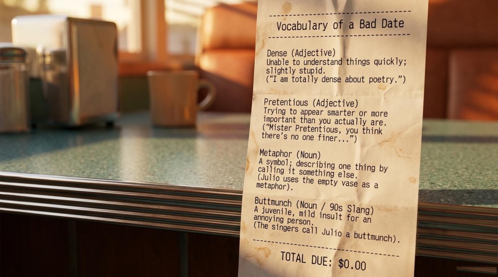
🔟 Buttmunch noun · 90s slang
Literal meaning: nonsense on its face — a compound of butt and munch that means nothing in standard English.
Figurative meaning: a juvenile, mild insult for an annoying person.
Example from the material: “The singers call Julio a buttmunch.” The insult arrives in four-part harmony, which somehow makes it both ruder and funnier.
How the deck explains it: the receipt page tags it “Noun / 90s Slang” and defines it as “A juvenile, mild insult for an annoying person.” The entry is a reminder that slang has a shelf life, and that dating slang is part of reading a period sitcom correctly.
The ten expressions above are the backbone of the episode, so they deserve a workout. The interactive cards below carry the same vocabulary in a two-sided format: the front shows the term, its part of speech, and a one-line hook; the back holds the literal meaning, the contextual meaning, a quoted example, and a short note on why the word matters. The cards rotate through five accent colors, they work with a keyboard as well as with a mouse, and the button underneath turns the whole set over at once.
A sitcom runs on jokes, but a good episode also runs on symbols. The deck quietly builds a layer of interpretation under the laughs, and four elements deserve a closer look: an empty vase, a plastic love bug, a three-step cycle of insecurity, and a slice of cake.
The vase is the episode’s central metaphor, and the deck’s receipt page gives the tool before the plot: “Metaphor (Noun): A symbol; describing one thing by calling it something else. (Julio uses the empty vase as a metaphor).” An empty vase is a beautiful object built to hold something it does not hold — and that is precisely the insult Phoebe hears in it. The deck’s storyline note completes the picture: the poem is titled “The Empty Vase,” and Phoebe convinces Monica that it insults her intelligence, before the clarification arrives that it was written about “all American women.” The symbol is powerful because it is empty in every sense: anyone can pour any meaning into it. The episode teaches its sharpest lesson here — a metaphor belongs to whoever interprets it, which is a liberty and a danger at the same time.
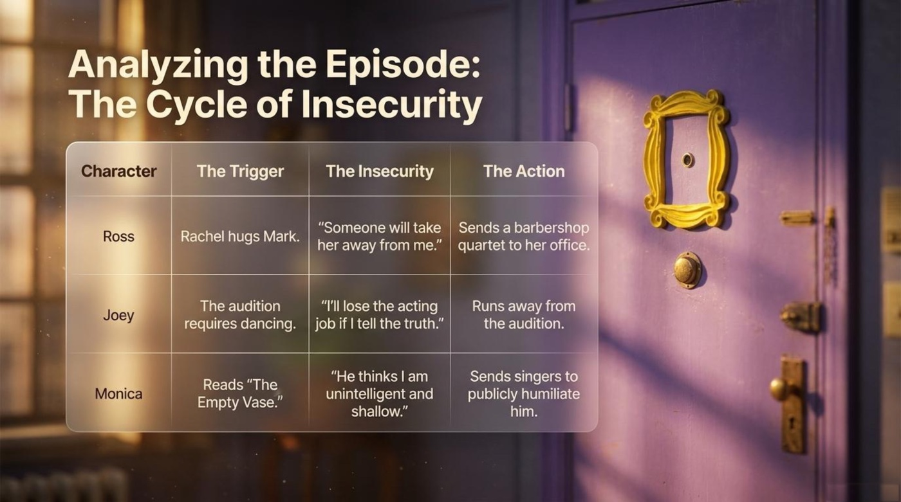
Ross’s gifts look generous at first glance, and the deck re-labels them as something else entirely. The storyline page states that Ross sends “singers, flowers, and a musical love bug to her office to prove she has a boyfriend,” and the polaroid card supplies the interpretation: “Marking your territory (Idiom): Doing something to show others that a person or thing belongs to you.” Read through that lens, the plush toy with the microphone stops being cute and becomes a flag planted in someone else’s workplace. The symbol matters because it exposes a pattern people still recognize today: generosity can be a costume for control, and public affection can double as a warning to rivals. The deck’s verdict is unflinching — his actions “push Rachel away rather than bringing her closer.”
The most analytical page in the deck sets the episode’s psychology against the image of Monica’s purple door with its famous yellow frame, under the heading “Analyzing the Episode: The Cycle of Insecurity.” Without a single table, its logic reads like this:
Ross — trigger: “Rachel hugs Mark.” Fear: “Someone will take her away from me.” Action: “Sends a barbershop quartet to her office.”
— from the lesson deck
Joey — trigger: “The audition requires dancing.” Fear: “I'll lose the acting job if I tell the truth.” Action: “Runs away from the audition.”
Monica — trigger: “Reads ‘The Empty Vase.’” Fear: “He thinks I am unintelligent and shallow.” Action: “Sends singers to publicly humiliate him.”
The framework is elegant enough to apply far beyond television. Every character receives a small spark, builds a catastrophe in private, and then acts in public — and the deck shows that the sequence trigger, fear, action is identical in all three plots. Language learners live inside the same cycle more often than they admit: a fast conversation triggers panic, the panic whispers that mistakes will expose them, and the action is silence. The episode, watched with this page in mind, becomes a mirror — and the mirror suggests that running from the audition and refusing to speak are the same move.
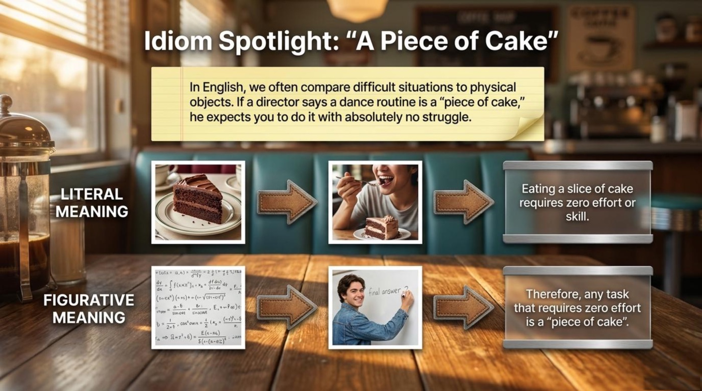
The deck’s idiom spotlight page deserves to be quoted in full, because it explains not just one idiom but the machinery of idioms in general:
“In English, we often compare difficult situations to physical objects. If a director says a dance routine is a “piece of cake,” he expects you to do it with absolutely no struggle.”
— from the lesson deck
The page then draws two parallel paths under the heading LITERAL MEANING and FIGURATIVE MEANING: eating a slice of cake “requires zero effort or skill,” and therefore “any task that requires zero effort is a ‘piece of cake’.” That two-step — build the physical image, then transfer it to an abstract situation — is how English manufactures thousands of its expressions. Once a learner sees the mechanism, the language stops being a pile of memorized phrases and becomes a system: a difficult person is a hard nut to crack, a revealed secret takes the cake of surprise, and a job that sounded glorious can turn out to be exactly the thing that makes you run from the audition. Interestingly, the episode’s own plot is the anti-cake: the director promises effortlessness, and Joey discovers choreography.
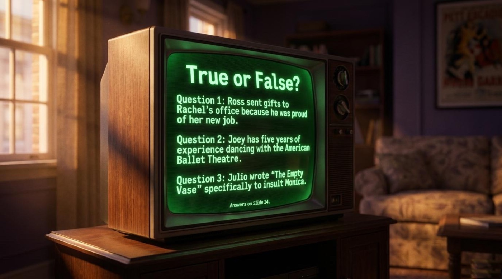
The deck closes with two self-check games. One is a round of true-or-false statements displayed on a glowing retro television, and the other is a game called “Match the Vocabulary,” where three polaroid words wait to be pinned to their definitions:
“A. Someone you trust with your secrets.” · “B. Acting more important or smarter than you are.” · “C. Slow to understand; slightly stupid.”
— matching options from the lesson deck
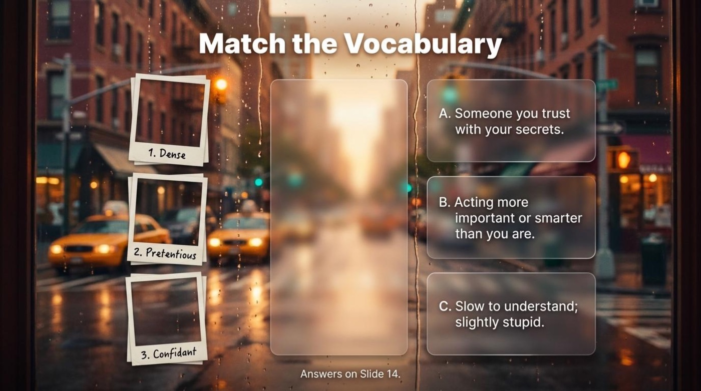
The interactive quiz below rebuilds both games and adds a few twists of its own. Every answer earns instant feedback — a green flash and a rising APPLAUSE! pop for a correct choice, a red shake and a BUZZ! for a wrong one — and each question opens a short explanation drawn from the material itself. The score counter and the row of progress dots track the run, and a results panel waits at the end with a verdict that changes with the score.
FINAL RESULT
8 / 8
The material ends its check with an answer page titled “Check Your Answers,” and its verdicts are refreshingly blunt: “FALSE. He sent them because he was marking his territory.” — “FALSE. Joey lied on his resume.” — “FALSE. He wrote it about ‘all American women.’” The vocabulary matches are equally direct: “Dense = Slow to understand,” “Pretentious = Acting more important,” “Confidant = Someone you trust.” All three plot statements are false, which is the deck’s quiet way of reminding readers that insecurity, not honesty, drove every action in the episode.
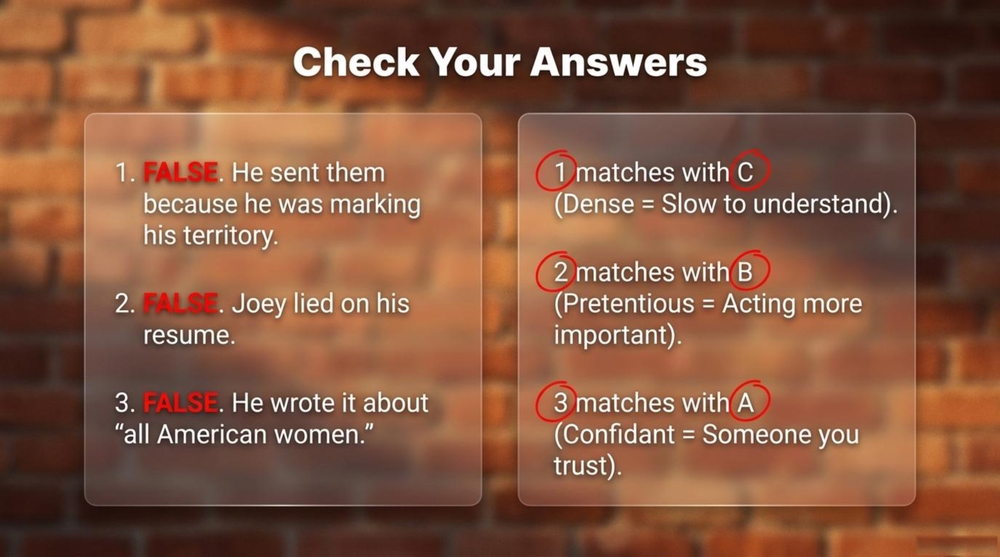
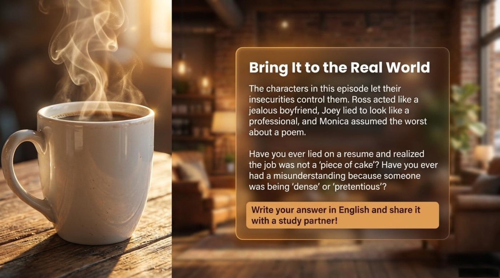
The final page of the deck is titled “Bring It to the Real World,” and it closes the lesson with a summary worth framing:
“The characters in this episode let their insecurities control them. Ross acted like a jealous boyfriend, Joey lied to look like a professional, and Monica assumed the worst about a poem.”
— from the lesson deck
The main takeaway for language learners sits directly inside that sentence. Insecurity controls learners in exactly the same way it controls the characters: it sends singers to offices, inventions to resumes, and silence to conversations. The deck’s final instruction — “Write your answer in English and share it with a study partner!” — is a cure, because writing forces honesty and sharing forces courage. The material also invites readers to recall a resume that turned out to be harder than its promises, and a misunderstanding that grew from someone being dense or pretentious; those memories, told in English to another person, are precisely the practice that turns vocabulary into fluency.
So rewatch the episode with a notebook nearby, flip through the cards above until the ten expressions feel like old friends, replay the quiz until the green dots outnumber the red ones, and then do the bravest thing in language learning: tell the story of Ross, Joey, and Monica — out loud, in your own English, to someone who will listen. Fluency grows the same way confidence does, one honest attempt at a time.
Everything on this page comes from the lesson deck below. Each file opens in a new tab.